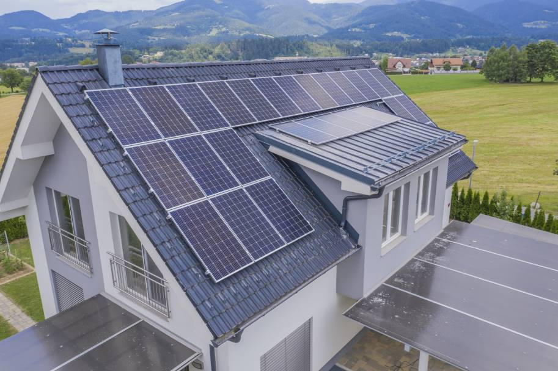
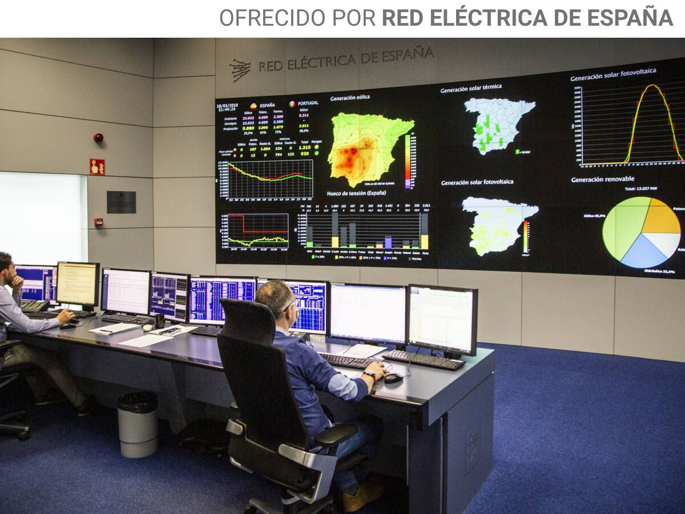

«Nuevos modelos de negocio para un sistema eléctrico inteligente, distribuido y descarbonizado.»
La digitalización del sector eléctrico ha transformado la generación renovable en un ecosistema de servicios tecnológicos de alto valor. En Ecovatio Energía Digital aprovechamos nuestras THD para posicionarnos en cuatro mercados en plena expansión y anticiparnos al salto comercial de los materiales solares de nueva generación.
Nuevos mercados generados por nuestras THD
Las soluciones de nuestro catálogo de productos responden directamente a la demanda de cuatro mercados digitales consolidados en la transición energética:
Mercado de redes eléctricas inteligentes Smart Grids y gestión distribuida
Descripción: Consiste en la sensorización y automatización de subestaciones, plantas solares y puntos de consumo para equilibrar la oferta y la demanda eléctrica en tiempo real, integrando energías renovables intermitentes sin sobrecargar la red. En Ecovatio participamos en este mercado con VatioSense (IoT) y Vatio5G Campo.
Ejemplo real: La plataforma tecnológica Kraken de Octopus Energy utiliza IoT, computación en la nube e inteligencia artificial para conectar millones de contadores inteligentes, baterías domésticas y parques renovables, ajustando el consumo a las horas de mayor generación limpia.
Infraestructura de red eléctrica inteligente monitorizada con sensores IoT.
Mercado de mantenimiento predictivo e inspección autónoma con robótica
Descripción: Agrupa los servicios basados en algoritmos predictivos, visión artificial, drones termográficos y robots autónomos que detectan fallos antes de que detengan la producción o limpian paneles sin intervención humana ni gasto de agua. Nuestra oferta en este segmento se articula mediante VatioForecast (IA) y VatioBot.
Ejemplo real: La empresa Ecoppia despliega robots autónomos alimentados por energía solar que limpian cada noche millones de módulos fotovoltaicos en seco mediante microfibra y flujo de aire, gestionados de forma remota desde la nube.
Limpieza automatizada en seco de instalaciones solares sin consumo de agua.
Mercado SaaS de comunidades energéticas y autoconsumo colectivo
Descripción: Está formado por plataformas digitales en la nube que permiten a vecinos, pymes y ayuntamientos compartir la electricidad generada en cubiertas solares cercanas, calculando coeficientes de reparto dinámico y liquidando excedentes sin trámites complejos. Ecovatio compite en este nicho con VatioComunidad.
Ejemplo real: La cooperativa Som Energia impulsa proyectos de generación renovable participada y autoconsumo colectivo en toda España, apoyándose en herramientas digitales para gestionar la producción compartida entre miles de socios.

Autoconsumo fotovoltaico compartido gestionado mediante plataformas en la nube.
Mercado de certificación energética y trazabilidad renovable 24/7
Descripción: Responde a la necesidad de las grandes industrias de acreditar ante auditorías ambientales (ESG) que cada megavatio hora consumido procede de fuentes limpias en la misma hora en que se produjo. Lo cubrimos con VatioChain (blockchain) y VatioInsight Big Data.
Ejemplo real: La plataforma GREENCHAIN de Acciona Energía emplea tecnología blockchain para registrar en tiempo real el origen renovable de la electricidad suministrada a clientes corporativos, garantizando una trazabilidad inmutable.

Monitorización de datos y certificación digital del origen limpio de la electricidad.
THD emergentes: materiales avanzados y fotovoltaica de nueva generación
Además de integrar tecnologías digitales consolidadas, en Ecovatio apostamos por los materiales avanzados como THD emergente estratégica para nuestro sector. En concreto, nos centramos en las células solares tándem de perovskita sobre silicio, incorporadas en nuestro servicio piloto VatioLab Tándem.
Por qué nos interesa: Los paneles convencionales de silicio tienen un límite físico de aprovechamiento de la luz solar. Al añadir una lámina ultrafina de perovskita encima del silicio, cada célula capta distintas longitudes de onda del espectro solar y eleva significativamente la eficiencia por metro cuadrado.
Mercado emergente al que apunta: Apunta directamente al mercado emergente de la fotovoltaica integrada en edificios (BIPV) y de la repotenciación de alta densidad: fachadas arquitectónicas, ventanas semitransparentes, cubiertas industriales ligeras que no soportan peso excesivo y plantas solares que necesitan producir más energía sin ocupar nuevo suelo.
Referente real del mercado emergente: La compañía europea Oxford PV lidera la comercialización industrial de células solares tándem de perovskita-silicio, alcanzando eficiencias récord en módulos comerciales que superan ampliamente a los paneles tradicionales.
Integración arquitectónica de paneles solares ligeros basados en materiales avanzados.
Relación THD, mercado y oportunidad de negocio
La siguiente tabla sintetiza cómo cada tecnología de nuestro catálogo conecta con un mercado concreto y qué oportunidad comercial genera para Ecovatio Energía Digital:
Mapa de tecnologías habilitadoras digitales, mercados asociados y oportunidades de negocio para Ecovatio
THD de nuestro catálogo
Mercado al que da acceso
Oportunidad de negocio para Ecovatio
Internet de las Cosas (IoT) y 5G
Redes inteligentes (Smart Grids) y telemetría en zonas rurales sin fibra.
Ingresos recurrentes por sensor conectado (VatioSense) y proyectos llave en mano de redes privadas (Vatio5G Campo) para parques aislados.
Inteligencia Artificial (IA) y Big Data
Predicción de generación renovable y analítica operativa de plantas.
Suscripción mensual (VatioForecast y VatioInsight) para productores que necesitan reducir penalizaciones por desvíos en el mercado eléctrico.
Robótica y drones
Operación y mantenimiento (O&M) autónomo sin consumo hídrico.
Contratos anuales de servicio (VatioBot) en plantas situadas en zonas áridas o con alta acumulación de polvo, evitando la compra de maquinaria al cliente.
Computación en la nube (Cloud)
Software SaaS para comunidades energéticas y autoconsumo colectivo.
Escalabilidad comercial mediante cuota por participante (VatioComunidad) dirigida a ayuntamientos, cooperativas vecinales y polígonos industriales.
Ciberseguridad industrial
Protección de infraestructuras críticas y cumplimiento de la directiva europea NIS2.
Auditorías obligatorias y vigilancia continua 24/7 (VatioShield) como servicio transversal incluido en todos nuestros paquetes.
Gemelo digital y simulación
Ingeniería virtual y planificación de repotenciaciones renovables.
Consultoría previa a la inversión (VatioTwin) para calcular la rentabilidad de añadir baterías o renovar parques antiguos antes de ejecutar obras.
Blockchain
Certificación energética horaria y mercados locales entre pares (P2P).
Microtarifa por megavatio hora registrado (VatioChain) para productores que venden energía verde certificada a clientes industriales.
Materiales avanzados (THD emergente)
Fotovoltaica integrada en edificios (BIPV) y módulos tándem de alta eficiencia.
Diferenciación tecnológica mediante pilotos monitorizados de 12 meses (VatioLab Tándem) para promotores innovadores y naves industriales.
Estrategia comercial
Combinar varias THD en paquetes integrados nos permite fidelizar al cliente con ingresos recurrentes y acompañar su evolución desde la sensorización básica hasta las tecnologías emergentes.